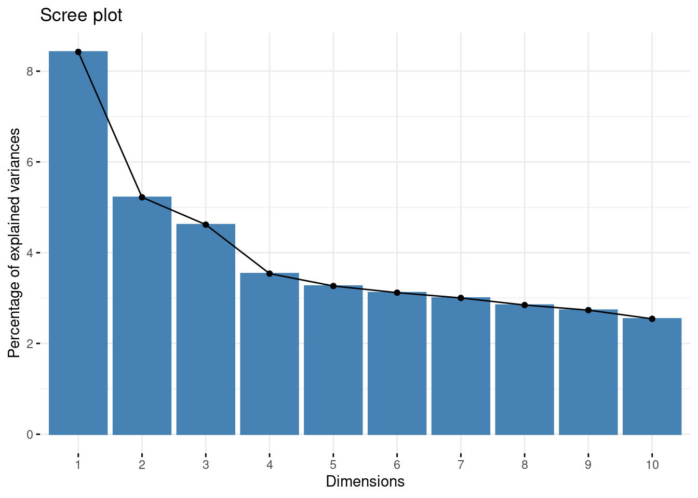
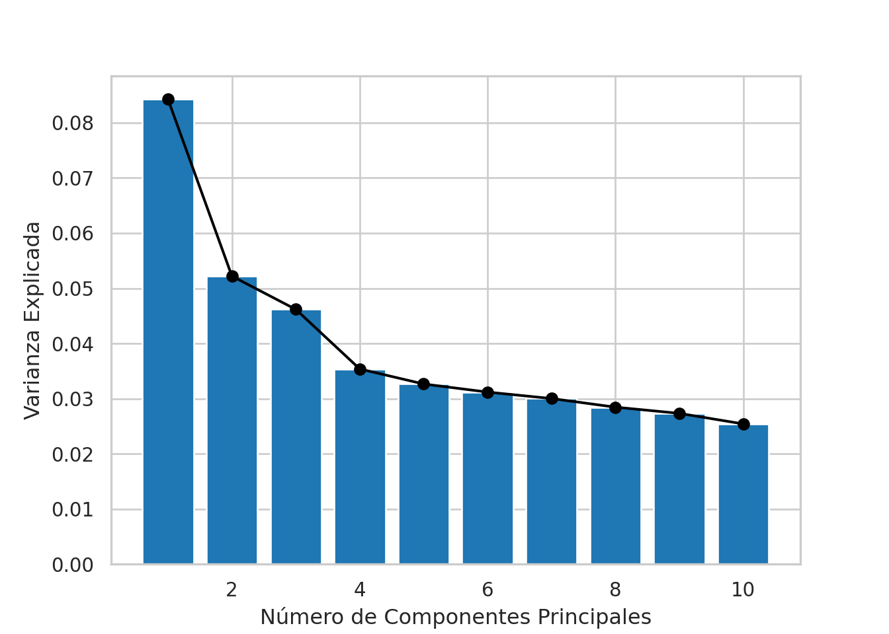
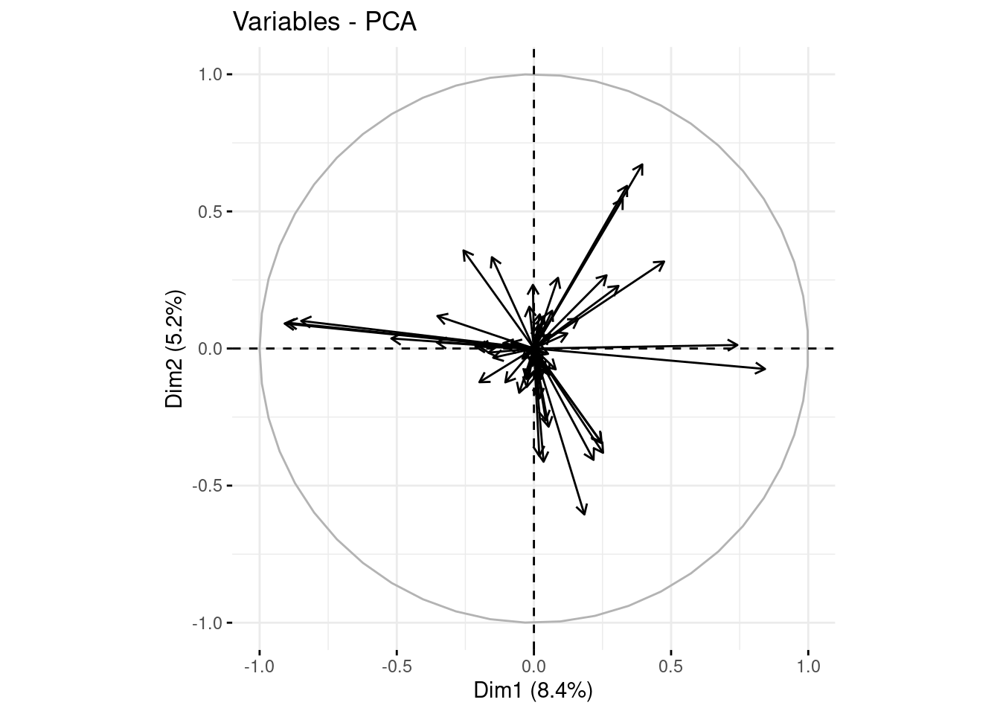
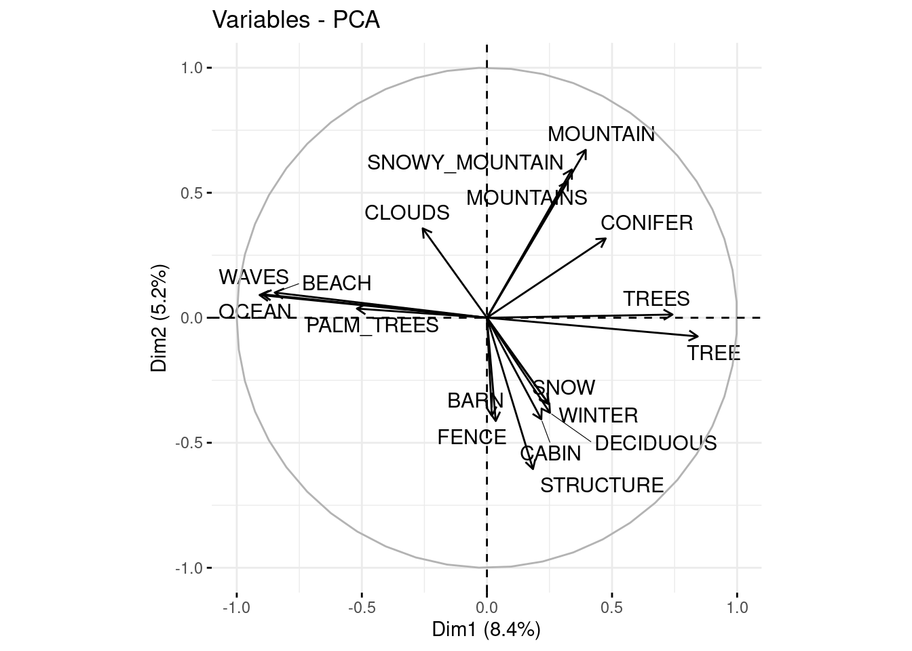
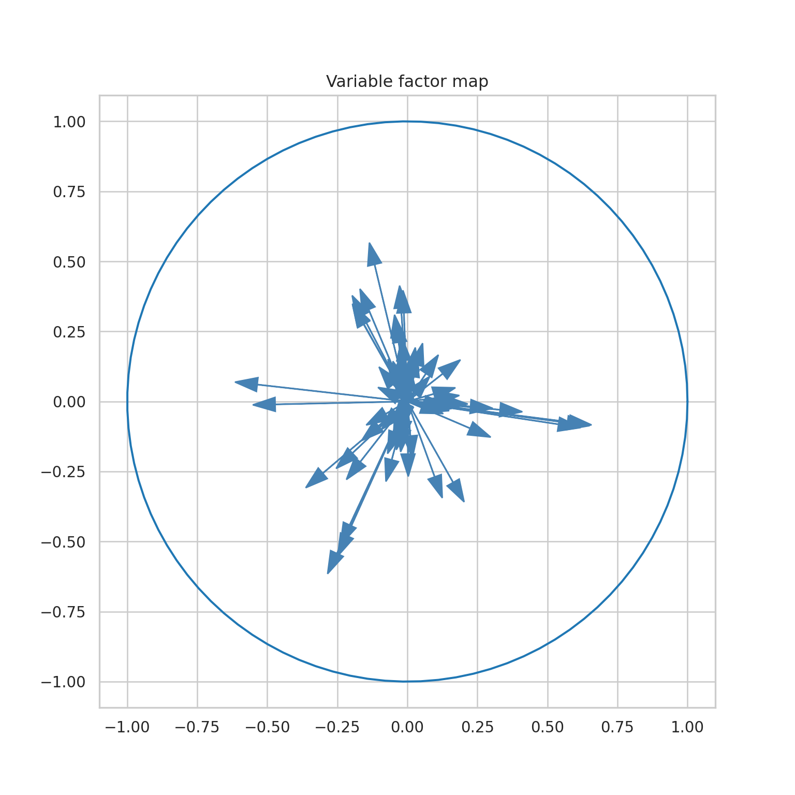
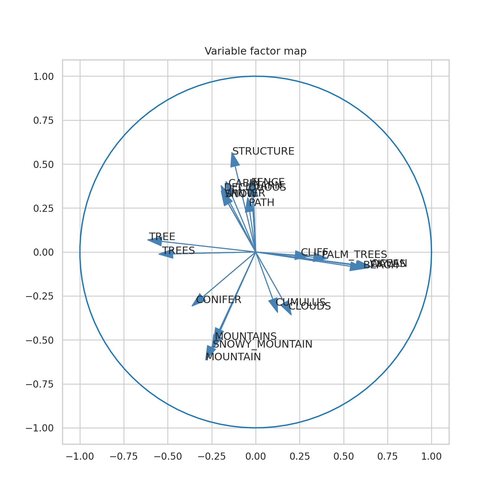
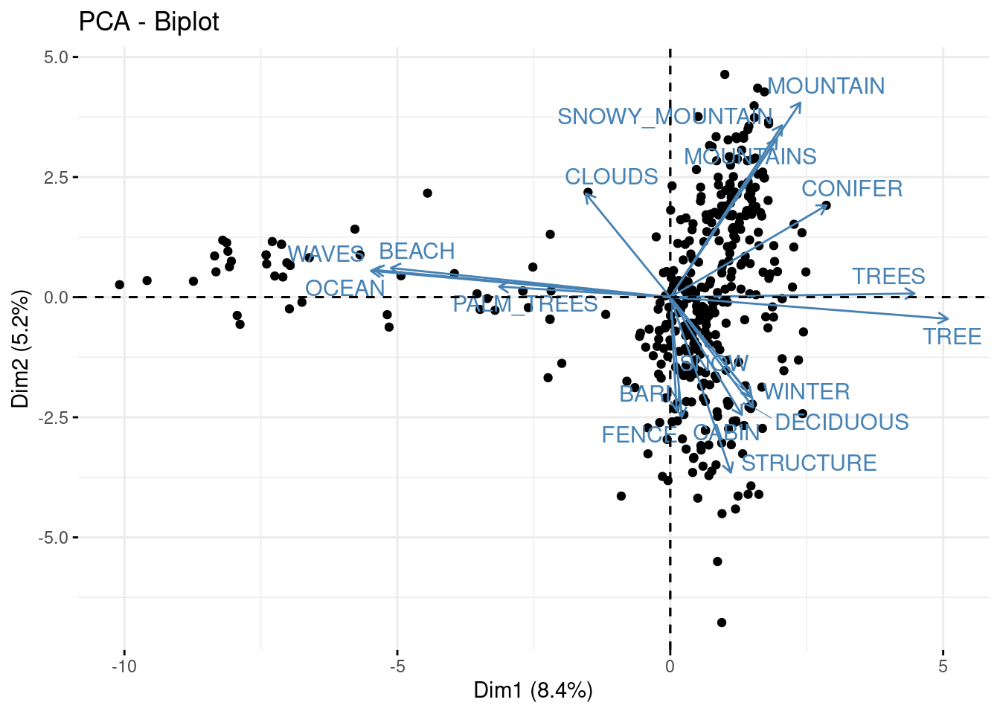
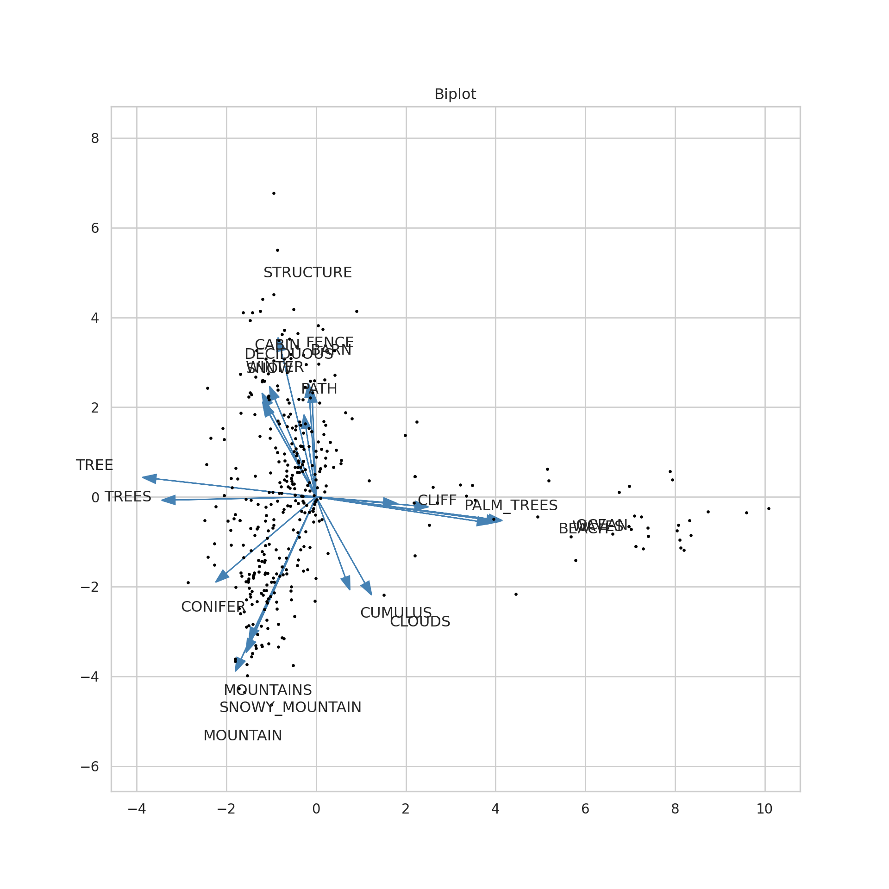
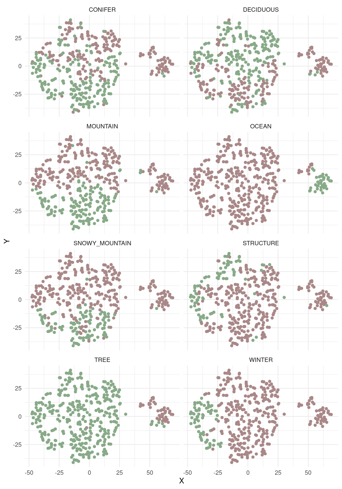
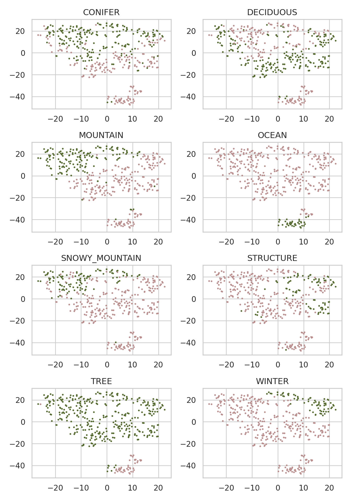

library("readr")
library("dplyr")
library("knitr")
library("ggplot2")
library("tidyr", exclude = "extract")
library("purrr")
library("FactoMineR")
library("factoextra")
library("tsne")
library("ade4")Proyecto: The joy of programming
Etapa 4 de 4
Introducción
En esta etapa se evalúan los resultados de los métodos de reducción de dimensiones presentados en la segunda etapa del proyecto. En el material del curso es posible encontrar las bases teóricas de los métodos de evaluación implementados en esta etapa, es importante consultarlo en caso de inquietudes. Al igual que las etapas anteriores, la implementación de los métodos de evaluación se realiza en lenguajes para el manejo de datos R y Python.
Los métodos aplicados para la evaluación de los resultados de los métodos de reducción de dimensiones son: proporción de la variabilidad y test de Mantel.
Objetivo actual
La cuarta etapa del proyecto está orientada a cumplir el cuarto objetivo específico:
Evaluar los resultados de los algoritmos de reducción de dimensiones y crear las visualizaciones e interpretaciones correspondientes.
Preliminares
En primer lugar debemos cargar las librerías que vamos a utilizar.
import numpy as np
import matplotlib.pyplot as plt
import os
import pandas as pd
import seaborn as sns
from sklearn.decomposition import PCA
from sklearn.preprocessing import StandardScaler
from sklearn.manifold import TSNE
import mantel
from scipy.spatial import distance_matrixGeneramos una lista de configuración. Esta es una buena práctica de programación en ciencia de datos. En esta lista vamos a almacenar información que utilizaremos en el código de forma reiterada.
mi_setup <- list(
datos_pinturas = file.path("01_data", "taller_datamining", "bob-ross.csv"),
archivo_grupos = file.path("01_data", "taller_datamining", "resultados_r_01.csv")
)
theme_set(theme_minimal())Este código genera una lista de configuración. En esta lista se guardan las rutas y otros parámetros que se usan más adelante en el desarrollo.
datos_pinturas: Ruta del archivo “bob-ross.csv” ubicado en la carpeta “01_data”. Este archivo contiene datos relacionados con pinturas de Bob Ross.archivo_grupos: Ruta del archivo “resultados_r_01.csv” ubicado en la carpeta “01_data”. Este archivo contiene resultados de los grupos obtenidos en el análisis previo.
Adicionalmente, se configura ggplot2 para usar el tema minimal por defecto.
mi_setup = {
"datos_pinturas": os.path.join("01_data", "taller_datamining", "bob-ross.csv"),
"archivo_grupos": os.path.join("01_data", "taller_datamining", "resultados_py_01.csv")
}
sns.set_style('whitegrid')
sns.set_context('notebook')Este código genera una lista de configuración. En esta lista se guardan las rutas y otros parámetros que se usan más adelante en el desarrollo.
datos_pinturas: Ruta del archivo “bob-ross.csv” ubicado en la carpeta “01_data”. Este archivo contiene datos relacionados con pinturas de Bob Ross.archivo_grupos: Ruta del archivo “resultados_py_01.csv” ubicado en la carpeta “01_data”. Este archivo contiene resultados de los grupos obtenidos en el análisis previo.
Adicionalmente, se configura seaborn para usar el tema whitegrid y el contexto notebook por defecto.
Leemos nuestros archivos de datos.
read_csv(mi_setup$datos_pinturas) -> tb_pinturas
read_csv(mi_setup$archivo_grupos) -> tb_gruposSe utiliza las función read_csv de la librería readr para leer archivos de datos en formato .CSV y se asignan los resultados a dos dataframes: tb_pinturas y tb_grupos. Aquí está la explicación:
read_csv(mi_setup$datos_pinturas) -> tb_pinturas: Se lee el archivo de datos cuya ruta está especificada enmi_setup$datos_pinturasutilizando la funciónread_csvdel paquetereadr. El dataframe resultante se asigna al objetotb_pinturas.read_csv(mi_setup$archivo_grupos) -> tb_grupos: Similar a la línea anterior, se lee el archivo de datos cuya ruta está enmi_setup$archivo_grupos. El dataframe resultante se asigna al objetotb_grupos.
tb_pinturas = pd.read_csv(mi_setup["datos_pinturas"])
tb_grupos = pd.read_csv(mi_setup["archivo_grupos"])Utilizando la librería pandas, mediante la función pd.read_csv se leen los archivos de datos en formato .CSV y se asignan los resultados a dos dataframes: tb_pinturas y tb_grupos. Aquí está la explicación:
tb_pinturas = pd.read_csv(mi_setup["datos_pinturas"]): Se lee el archivo de datos cuya ruta está especificada enmi_setup["datos_pinturas"]. El dataframe resultante se asigna al objetotb_pinturas.tb_grupos = pd.read_csv(mi_setup["archivo_grupos"]): Similar a la línea anterior, se lee el archivo de datos cuya ruta está enmi_setup["archivo_grupos"]. El dataframe resultante se asigna al objetotb_grupos.
Preparación de los datos
Seleccionamos las columnas con las que vamos a realizar nuestros análisis. En este caso se trata de todas las columnas de atributos de las pinturas.
tb_pinturas %>%
select(- EPISODE, - TITLE) -> tb_pinturas_caractSe utiliza el operador %>% de la biblioteca dplyr para realizar una operación de selección de columnas en el dataframe tb_pinturas. Aquí se explica paso a paso:
tb_pinturas %>%: El operador%>%(pipe) se utiliza para pasar el objetotb_pinturasal siguiente paso de la cadena de operaciones.select(- EPISODE, - TITLE): Se utiliza la funciónselectdel paquetedplyrpara elegir columnas específicas del dataframetb_pinturas. La notación-se utiliza para excluir las columnas llamadas “EPISODE” y “TITLE”. Esto significa que todas las columnas excepto “EPISODE” y “TITLE” son seleccionadas.-> tb_pinturas_caract: El resultado de la selección se asigna a un nuevo dataframe llamadotb_pinturas_caract.
tb_pinturas_caract = tb_pinturas.drop(["EPISODE", "TITLE"], axis=1)Este código elimina las columnas “EPISODE” y “TITLE” del dataframe tb_pinturas, y el resultado se guarda en un nuevo dataframe llamado tb_pinturas_caract.
tb_pinturas_caract =: El resultado de la operación se guarda en un nuevo dataframe denominado tb_pinturas_caract.
**tb_pinturas.drop([“EPISODE”, “TITLE”], …):** Se utiliza el métododropde pandas para eliminar las columnas "EPISODE" y "TITLE" del dataframetb_pinturas`.
axis=1: El argumento axis establece en qué sentido se llevan a cabo las operaciones enunciadas.En este caso axis=1 indica que la operación se realiza a lo largo de las columnas.
Reducción de la dimensionalidad
La evaluación de los resultados requiere algunas cálculos que se realizan y se guardan durante el ajuste de los modelos. Por esta razón, a diferencia de los algoritmos de agrupación, resulta más fácil correr de nuevo las rutinas de reducción de dimensiones presentadas en la unidad 2 que cargar los resultados. Este es el punto de partida.
Análisis de Componentes principales
Aplicamos el análisis de componentes principales al conjunto de datos.
PCA(tb_pinturas_caract, graph = FALSE, ncp = 2) -> ls_pca_resultado
ls_pca_resultado %>%
pluck("ind", "coord") %>%
as_tibble() %>%
setNames(c("X", "Y")) -> tb_pcaEste código realiza un análisis de Componentes Principales (PCA) sobre el dataframe tb_pinturas_caract y posteriormente manipula los resultados para obtener un nuevo dataframe llamado tb_pca. A continuación, se presenta la explicación paso a paso:
PCA(tb_pinturas_caract, ...): Se utiliza la función PCA del paquete FactoMineR para realizar un análisis de componentes crincipales en el dataframe tb_pinturas_caract.
PCA(..., graph = FALSE, ncp = 2): El argumento graph = FALSE indica que no se deben generar gráficos durante el análisis. El argumento ncp = 2 especifica que se deben retener los dos primeros componentes principales.
-> ls_pca_resultado: El resultado es una lista que se almacena en el objeto ls_pca_resultado.
ls_pca_resultado %>% pluck("ind", "coord"): La función pluck se utiliza para extraer las coordenadas de las observaciones del resultado del PCA.
%>% as_tibble(): Se utiliza la función as_tibble para convertir las coordenadas a un formato de tibble.
%>% setNames(c("X", "Y")): La función setNames se usa para renombrar las columnas del tibble como “X” y “Y”.
-> tb_pca: El resultado final es un datframe que se almacena en el objeto tb_pca.
arr_pinturas_standar = StandardScaler().fit_transform(tb_pinturas_caract)
mod_pca = PCA(n_components=10)
mod_pca = mod_pca.fit(arr_pinturas_standar)
tb_pca = pd.DataFrame(
data = mod_pca.transform(arr_pinturas_standar)[: , [0, 1]],
columns = ["X", "Y"]
)Este código utiliza la librería scikit-learn para realizar un análisis de Componentes Principales (PCA) sobre el DataFrame tb_pinturas_caract y crea un nuevo DataFrame llamado tb_pca. A continuación, se presenta la explicación paso a paso:
arr_pinturas_standar =: El resultado de esta operacíon, que es un arreglo, se guarda en el objeto arr_pinturas_standar.
**StandardScaler():** Se utilizaStandardScalerpara estandarizar el dataframetb_pinturas_caract`. Esto significa que cada característica (columna) se ajusta para tener una media de cero y una desviación estándar de uno.
.fit_transform(tb_pinturas_caract): El método fit_transform realiza el ajuste y la transformación en una sola llamada.
mod_pca =: El objeto resultante es un modelo, que se guarda en el objeto mod_pca.
PCA(n_components=10): Se crea una instancia de la clase PCA con la especificación de retener dos componentes principales (n_components=2).
mod_pca = mod_pca.fit(arr_pinturas_standar): Luego, se ajusta el modelo a los datos estandarizados utilizando el método fit.
mod_pca.transform(arr_pinturas_standar): Se utiliza el modelo PCA entrenado para transformar los datos estandarizados. Esto significa proyectar los datos originales en el espacio de las dos primeras componentes principales.
tb_pca = pd.DataFrame(data = ..., columns = ...): Se crea un nuevo dataframe llamado tb_pca utilizando las componentes principales obtenidas. Este dataframe tiene dos columnas, “X” y “Y”, que representan las dos dimensiones principales del espacio de los componentes principales.
t-SNE
Realizamos la reducción a 2 dimensiones aplicando el algoritmo t-SNE a nuestro dataset de características tb_pinturas_caract. En este ejemplo, utilizamos un perplexity = 20, pero podríamos utilizar cualquier otro valor entre 1 y 50.
tsne(
dist(tb_pinturas_caract),
perplexity = 20,
k = 2,
initial_dims = ncol(tb_pinturas_caract)
) -> mt_tsne_resultado
mt_tsne_resultado %>%
as_tibble(.name_repair = "minimal") %>%
setNames(c("X", "Y")) -> tb_tsnetsne(dist(tb_pinturas_caract),...): Se utiliza la función tsne para aplicar el método t-SNE a la matriz de distancias de las características de las pinturas contenidas en tb_pinturas_caract. Se especifican parámetros como la perplexidad, el número de dimensiones, y las dimensiones iniciales.
... -> mt_tsne_resultado: El resultado de la aplicación de t-SNE es una matriz, que se asigna al objeto mt_tsne_resultado.
mt_tsne_resultado %>% as_tibble(.name_repair = "minimal"): Se utiliza %>% para encadenar operaciones. El resultado de t-SNE se transforma a un dataframe mediante la función as_tibble.
... %>% setNames(c("X", "Y")) -> tb_tsne: Se renombran las columnas como “X” y “Y”. El resultado es un dataframe que se almacena en el objeto tb_tsne.
mod_tsne = TSNE(n_components=2, learning_rate='auto', init='random', perplexity=20)
mt_tsne_resultado = mod_tsne.fit_transform(tb_pinturas_caract)
tb_tsne = pd.DataFrame(
data = mt_tsne_resultado,
columns = ["X", "Y"]
)mod_tsne = TSNE(n_components=2, ...): Se instancia un modelo t-SNE utilizando la clase TSNE del paquete sklearn. Se especifican parámetros como el número de componentes, la tasa de aprendizaje, el método de inicialización y la perplexidad. La instancia es un modelo que se guarda en el objeto mod_tsne.
mod_tsne.fit_transform(tb_pinturas_caract): Se ajusta el modelo t-SNE usando los datos de las pinturas contenidas en tb_pinturas_caract utilizando el método fit_transform. Esto realiza el proceso de reducción de dimensionalidad y devuelve las coordenadas en el espacio de baja dimensión en formato de matriz, que se guardae en el objeto mt_tsne_resultado.
tb_tsne = pd.DataFrame(...): Se crea un DataFrame llamado tb_tsne con las coordenadas resultantes del t-SNE, asignando nombres a las columnas como “X” y “Y”.
Evaluación de los resultados de la reducción de dimensiones
Los métodos para evaluar los resultados de la reducción de dimensiones son los siguientes:
Proporción de la variabilidad conservada: que se aplica al análisis de componentes principales para establecer el porcentaje de varianza recogido en sus componentes. Este método no se aplica al resultado del algoritmo t-SNE.
Prueba de Mantel para similaridad entre matrices de distancias: que se aplica en ambos casos, acp y t-SNE, con el fin de establecer la cercanía (correlación) entre la matriz de distancias de los puntos resultantes y la matriz de distancias original.
Proporción de variabilidad conservada
Calculamos la varianza recogida por el análisis de componentes principales.
ls_pca_resultado %>%
get_eig %>%
head(10) -> tb_varianza| eigenvalue | variance.percent | cumulative.variance.percent | |
|---|---|---|---|
| Dim.1 | 5.56 | 8.42 | 8.42 |
| Dim.2 | 3.45 | 5.22 | 13.64 |
| Dim.3 | 3.05 | 4.62 | 18.26 |
| Dim.4 | 2.34 | 3.54 | 21.80 |
| Dim.5 | 2.16 | 3.27 | 25.07 |
| Dim.6 | 2.06 | 3.12 | 28.19 |
| Dim.7 | 1.98 | 3.00 | 31.19 |
| Dim.8 | 1.88 | 2.85 | 34.04 |
| Dim.9 | 1.80 | 2.73 | 36.77 |
| Dim.10 | 1.68 | 2.54 | 39.31 |
ls_pca_resultado %>% get_eig: Extrae los valores propios (eigenvalues) del análisis de componentes principales mediante get_eig.
... %>% head(10): Toma las primeras 10 filas de estos valores propios usando head(10).
... -> tb_varianza: El resultado se almacena en el objeto tb_varianza.
tb_varianza = pd.DataFrame({
'Componente':
np.array(range(len(mod_pca.explained_variance_ratio_))) + 1,
'Varianza Explicada': mod_pca.explained_variance_ratio_,
'Varianza acumulada': mod_pca.explained_variance_ratio_.cumsum()
})| Componente | Varianza Explicada | Varianza acumulada | |
|---|---|---|---|
| 0 | 1 | 0.084240 | 0.084240 |
| 1 | 2 | 0.052203 | 0.136443 |
| 2 | 3 | 0.046177 | 0.182620 |
| 3 | 4 | 0.035389 | 0.218008 |
| 4 | 5 | 0.032660 | 0.250668 |
| 5 | 6 | 0.031196 | 0.281864 |
| 6 | 7 | 0.030028 | 0.311892 |
| 7 | 8 | 0.028464 | 0.340356 |
| 8 | 9 | 0.027341 | 0.367697 |
| 9 | 10 | 0.025430 | 0.393127 |
tb_varianza = pd.DataFrame(...): Se crea un dataframe llamado tb_varianza que contiene la varianza explicada y la varianza acumulada asociadas con cada componente principal.
mod_pca.explained_variance_ratio_: Proporciona la proporción de varianza explicada por cada componente.
mod_pca.explained_variance_ratio_.cumsum(): Proporciona la varianza acumulada.
A partir de la varianza recogida generamos el gráfico de sedimentación
fviz_screeplot(ls_pca_resultado)
El gráfico de sedimentación muestra la proporción de varianza explicada por cada componente principal en el eje y contra el número de componente principal en el eje x. Este gráfico es útil para determinar cuántos componentes principales retener en función de la cantidad de varianza que explican.
fviz_screeplot: es una función de visualización que se utiliza para trazar el gráfico de sedimentación de un análisis de componentes principales (PCA).
ls_pca_resultado: es el resultado del análisis de componentes principales previo.
plt.plot(tb_varianza["Componente"], tb_varianza["Varianza Explicada"], 'ok-')
plt.bar(tb_varianza["Componente"], tb_varianza["Varianza Explicada"])
plt.xlabel('Número de Componentes Principales')
plt.ylabel('Varianza Explicada')
plt.show()
plt.close()plt.plot(..., 'ok-'): - Se utiliza plt.plot para trazar una línea que conecta los puntos (número de componente principal, proporción de varianza explicada). Se especifica 'ok-' para que los puntos sean de color negro ('k'), redondos ('o') y conectados por líneas ('-').
plt.bar(...): Se utiliza plt.bar para trazar un gráfico de barras de la proporción de varianza explicada por cada componente principal. Esto proporciona una representación visual adicional de la distribución de la varianza entre los componentes principales.
plt.xlabel(...); plt.ylabel(...): Se añaden etiquetas al eje x y al eje y,
plt.show(); plt.close(): Se muestra la figura y luego se cierra.
Test de Mantel
La prueba de Mantel permite establecer la correlación entre dos matrices de distancias con un nivel de significancia dado.
tb_pinturas_caract %>% dist -> mt_dist_pinturas
tb_pca %>% dist -> mt_dist_pca
mantel.randtest(
mt_dist_pinturas, mt_dist_pca,
nrepet = 1000
) -> mantel_result_pca
mantel_result_pcaMonte-Carlo test
Call: mantel.randtest(m1 = mt_dist_pinturas, m2 = mt_dist_pca, nrepet = 1000)
Observation: 0.6786
Based on 1000 replicates
Simulated p-value: 0.000999001
Alternative hypothesis: greater
Std.Obs Expectation Variance
2.630284e+01 4.859162e-04 6.646608e-04 tb_tsne %>% dist -> mt_dist_tsne
mantel.randtest(
mt_dist_pinturas, mt_dist_tsne,
nrepet = 1000
) -> mantel_result_tsne
mantel_result_tsneMonte-Carlo test
Call: mantel.randtest(m1 = mt_dist_pinturas, m2 = mt_dist_tsne, nrepet = 1000)
Observation: 0.6670998
Based on 1000 replicates
Simulated p-value: 0.000999001
Alternative hypothesis: greater
Std.Obs Expectation Variance
3.482720e+01 3.515885e-04 3.665106e-04 Este código realiza pruebas de Mantel para comparar la similitud entre las matrices de distancia de las características originales (tb_pinturas_caract) con las matrices de distancia de las coordenadas en el espacio de componentes principales (tb_pca) y en el espacio de t-SNE (tb_tsne).
tb_pinturas_caract %>% dist -> mt_dist_pinturas: Calcula la matriz de distancias entre las filas de tb_pinturas_caract y almacena el resultado en mt_dist_pinturas. El operador %>% (pipe) se utiliza para pasar el resultado de una operación como argumento a la siguiente.
tb_pca %>% dist -> mt_dist_pca: Calcula la matriz de distancias entre las filas de tb_pca, que contiene las coordenadas de las observaciones en el espacio de componentes principales, y almacena el resultado en mt_dist_pca.
mantel.randtest(mt_dist_pinturas, mt_dist_pca, ...): Realiza una prueba de Mantel entre las matrices de distancia mt_dist_pinturas y mt_dist_pca; mantel.randtest del paquete ade4 es la función que realiza una prueba de Mantel.
mantel.randtest(..., nrepet = 1000): indica que se deben realizar 1000 permutaciones aleatorias para calcular el p-valor.
mantel_result_pca: Almacena los resultados de la prueba de Mantel entre las distancias de tb_pinturas_caract y tb_pca.
tb_tsne %>% dist -> mt_dist_tsne: Calcula la matriz de distancias entre las filas de tb_tsne, que contiene las coordenadas de las observaciones en el espacio de t-SNE, y almacena el resultado en mt_dist_tsne.
mantel.randtest(mt_dist_pinturas, mt_dist_tsne, ...): Realiza una prueba de Mantel entre las matrices de distancia mt_dist_pinturas y mt_dist_tsne; mantel.randtest del paquete ade4 es la función que realiza una prueba de Mantel.
mantel.randtest(..., nrepet = 1000): Se utilizan 1000 permutaciones aleatorias para calcular el p-valor.
mantel_result_tsne: Almacena los resultados de la prueba de Mantel entre las distancias de tb_pinturas_caract y tb_tsne.
mt_dist_pinturas = distance_matrix(tb_pinturas_caract.values, tb_pinturas_caract.values)
mt_dist_pca = distance_matrix(tb_pca.values, tb_pca.values)
mantel_result_pca = mantel.test(mt_dist_pinturas, mt_dist_pca, perms=1000, method='pearson', tail='upper')
mantel_result_pca.r0.6785999550226706mantel_result_pca.p0.001mt_dist_tsne = distance_matrix(tb_tsne.values, tb_tsne.values)
mantel_result_tsne = mantel.test(mt_dist_pinturas, mt_dist_tsne, perms=1000, method='pearson', tail='upper')
mantel_result_tsne.r0.6791782039610739mantel_result_tsne.p0.001Este código realiza pruebas de Mantel para comparar la similitud entre las matrices de distancia euclidiana de las características originales (tb_pinturas_caract) con las matrices de distancia euclidiana de las coordenadas en el espacio de componentes principales (tb_pca) y en el espacio de t-SNE (tb_tsne).
mt_dist_pinturas = distance_matrix(...): Calcula la matriz de distancias euclidianas entre todas las filas de tb_pinturas_caract. Guarda el resultado en el objeto mt_dist_pinturas.
tb_pinturas_caract.values: se utiliza para obtener la representación de matriz de los datos.
mt_dist_pca = distance_matrix(): Similar a la línea anterior, calcula la matriz de distancias euclidianas entre todas las filas de tb_pca. Guarda el resultado en el objeto mt_dist_pca.
tb_pca.values: se utiliza para obtener la representación de matriz de las coordenadas en el espacio de componentes principales.
mantel_result_pca = mantel.test(...): Realiza una prueba de Mantel entre las matrices de distancia; mantel.test del paquete mantel es la función que realiza una prueba de Mantel. El resultado se guarda en el objeto mantel_result_pca.
mantel.test(mt_dist_pinturas, mt_dist_pca,...): las matrices de distancia evaluadas son la matriz de distancias de los datos de las pinturas mt_dist_pinturas y la matriz de distancias de la representación de los datos en el espacio de componentes principales mt_dist_pca.
mantel.test(..., perms, method, tail): Se utilizan los siguientes argumentos para la función: perms=1000 indica que se deben realizar 1000 permutaciones aleatorias para calcular el p-valor; method='pearson' especifica que se debe usar la correlación de Pearson como medida de asociación; tail='upper' indica que se está interesado en una prueba de una cola (una dirección).
mantel_result_pca.r: Muestra el coeficiente de correlación de Mantel obtenido en la prueba de Mantel para tb_pca.
mantel_result_pca.p: Muestra el p-valor asociado con la prueba de Mantel para tb_pca.
mt_dist_tsne = distance_matrix(...): Calcula la matriz de distancias euclidianas entre todas las filas de tb_tsne. Guarda el resultado en el objeto mt_dist_tsne.
tb_tsne.values: se utiliza para obtener la representación de matriz de las coordenadas en el espacio de t-SNE.
mantel_result_tsne = mantel.test(...): Realiza una prueba de Mantel entre las matrices de distancia; mantel.test del paquete mantel es la función que realiza una prueba de Mantel. El resultado se guarda en el objeto mantel_result_tsne.
mantel.test(mt_dist_pinturas, mt_dist_tsne, ...): las matrices de distancia evaluadas son la matriz de distancias de los datos de las pinturas mt_dist_pinturas y la matriz de distancias de la representación de los datos en el espacio t-SNE mt_dist_tsne.
mantel.test(..., perms, method, tail): Utiliza los mismos parámetros que la prueba de Mantel anterior.
mantel_result_tsne.r: Muestra el coeficiente de correlación de Mantel obtenido en la prueba de Mantel para tb_tsne.
mantel_result_tsne.p: Muestra el p-valor asociado con la prueba de Mantel para tb_tsne.
Interpretación
A continuación, implementamos dos herramientas de interpretación para los resultados de los métodos de reducción de dimensiones.
Círculo de correlaciones
El círculo de correlaciones nos ayuda a interpretar el análisis de componentes principales. Las variables son representadas por medio de flechas que se distribuyen en el círculo unitario.
Cada variable se representa por medio de una flecha.
La dirección de la flecha indica la dirección del plano hacia donde esa variable crece.
La longitud de la flecha indica el nivel de representación que tiene esta variable en el plano de los componentes principales.
El ángulo entre dos flechas permite intuir su correlación. Flechas con un ángulo muy agudo suelen representar variables con una correlación positiva fuerte. Flechas opuestas, con un ángulo muy obtuso o muy abierto, suelen representar variables con una alta correlación negativa; y flechas que presentan un ángulo recto están generalmente asociadas a variables con una correlación cercana a cero.
fviz_pca_var(ls_pca_resultado, geom = "arrow")
fviz_pca_var(
ls_pca_resultado,
repel = TRUE,
select.var = list(cos2 = 0.15)
)
Este código genera dos visualizaciones del análisis de componentes principales. La primera muestra la contribución de todas las variables mediante flechas en el espacio de componentes principales. La segunda visualización resalta específicamente las variables con una contribución significativa, utilizando el parámetro select.var para filtrar las variables basándose en su coseno cuadrado. El uso de repel = TRUE ayuda a mejorar la legibilidad de las etiquetas evitando solapamientos.
fviz_pca_var(...): La función fviz_pca_var se utiliza para visualizar la contribución de las variables originales en el espacio de componentes principales.
ls_pca_resultado: es el resultado de un análisis de componentes principales previo.
geom = "arrow": El parámetro geom = "arrow" indica que se deben utilizar flechas para representar la contribución de las variables.
repel = TRUE: indica que las etiquetas de las variables deben colocarse de manera que eviten solapamientos.
select.var = list(cos2 = 0.15): selecciona las variables cuyo coseno cuadrado (cos2) es mayor o igual a 0.15, lo que significa que estas variables tienen una contribución sustancial en al menos uno de los ejes principales.
(fig, ax) = plt.subplots(figsize=(8, 8))
for i in range(0, mod_pca.components_.shape[1]):
ax.arrow(
0, 0,
mod_pca.components_[0, i]*1.5,
mod_pca.components_[1, i]*1.5,
head_width=0.05,
head_length=0.08, fc='steelblue', ec='steelblue'
)
an = np.linspace(0, 2 * np.pi, 100)
plt.plot(np.cos(an), np.sin(an))
plt.axis('equal')ax.set_title('Variable factor map')
plt.show()
plt.close()
threshold = 0.15
max_representation = (np.abs(mod_pca.components_)
.take([0, 1], axis=0)
.max(0))
condition = np.where(max_representation > threshold)[0]
(fig, ax) = plt.subplots(figsize=(8, 8))
for i in condition:
ax.arrow(
0, 0,
mod_pca.components_[0, i]*1.5,
mod_pca.components_[1, i]*1.5,
head_width=0.05,
head_length=0.08, fc='steelblue', ec='steelblue'
)
plt.text(
mod_pca.components_[0, i]*1.7,
mod_pca.components_[1, i]*1.7,
tb_pinturas_caract.columns.values[i]
)
an = np.linspace(0, 2 * np.pi, 100)
plt.plot(np.cos(an), np.sin(an))
plt.axis('equal')ax.set_title('Variable factor map')
plt.show()
plt.close()Este código crea dos visualizaciones del mapa de factores variables en un espacio de componentes principales. La primera visualización muestra todas las variables, mientras que la segunda resalta las variables con contribución significativa según un umbral predefinido.
(fig, ax) = plt.subplots(figsize=(8, 8)): Se crea una nueva figura y ejes con un tamaño de 8x8.
Se dibujan las flechas usando un bucle.
for i in range(0, mod_pca.components_.shape[1]):: Se utiliza un bucle for para iterar sobre todas las variables (columnas) en los componentes principales.
ax.arrow(...): Se añade una flecha para cada variable en el espacio de componentes principales.
Se añade un círculo unitario para proporcionar una escala.
an = np.linspace(...): Se genera un conjunto de puntos para un círculo completo.
plt.plot(np.cos(an), np.sin(an)) Se añade un círculo unitario utilizando las funciones seno y coseno.
y finalmente
plt.axis('equal'): Se ajusta la escala de los ejes para que tengan la misma proporción.
ax.set_title('Variable factor map'): Se establece el título del gráfico.
plt.show(); plt.close(): Se muestra la figura y luego se cierra.
Para el segundo gráfico, seguimos los mismos pasos adicionando un umbral de 0.15.
threshold = 0.15: Se define un umbral para la contribución significativa de las variables.
(np.abs(...).take(...).max(...)): Se calcula la representación máxima en los dos primeros componentes principales para cada variable. Este resultado se guarda en el objeto max_representation.
np.where(max_representation > threshold)[0]: Se encuentran las variables con una contribución mayor que el umbral. Este resultado se guarda en el objeto condition.
(fig, ax) = plt.subplots(figsize=(8, 8)): Se crea una nueva figura y ejes con un tamaño de 8x8.
Se dibujan las flechas usando un bucle.
for i in range(0, mod_pca.components_.shape[1]):: Se utiliza un bucle for para iterar sobre todas las variables (columnas) en los componentes principales.
ax.arrow(...): Se añade una flecha para cada variable en el espacio de componentes principales.
plt.text(...): Se añaden los nombres de las variables que fueron filtradas por el umbral.
Se añade un círculo unitario para proporcionar una escala.
an = np.linspace(...): Se genera un conjunto de puntos para un círculo completo.
plt.plot(np.cos(an), np.sin(an)) Se añade un círculo unitario utilizando las funciones seno y coseno.
Por último, se agregan algunos detalles
plt.axis('equal'): Se ajusta la escala de los ejes para que tengan la misma proporción.
ax.set_title('Variable factor map'): Se establece el título del gráfico.
plt.show(); plt.close(): Se muestra la figura y luego se cierra.
Visualización de datos reducidos
En el transcurso del proyecto hemos aprendido a visualizar nuestros resultados utilizando las técnicas de reducción de dimensiones. En esta unidad abordamos dos visualizaciones más. El biplot, para visualizar los resultados del análisis de componentes principales, y el diccionario de gráficos para los resultados del algoritmo t-SNE.
El biplot consiste en generar, en una sola visualización, la nube de puntos acompañada del círculo de correlaciones. De manera que se interpreta para cada dato en qué variables tiene mayores valores.
fviz_pca_biplot(
ls_pca_resultado, geom.ind = "point",
geom.var = c("arrow", "text"), repel = TRUE,
select.var = list(cos2 = 0.15)
)
Este código utiliza la función fviz_pca_biplot para crear un biplot que representa las observaciones como puntos y las variables como flechas con etiquetas de texto. Se destacan las variables con un coseno cuadrado (cos2) mayor al 0.15. Este tipo de visualización es común en análisis de componentes principales para entender la relación entre observaciones y variables.
fviz_pca_biplot: es una función que crea un biplot a partir de los resultados de un análisis de componentes principales.
geom.ind = "point": indica que las observaciones deben representarse como puntos en el biplot.
geom.var = c("arrow", "text"): especifica que las variables se deben representar como flechas y con etiquetas de texto en el biplot.
repel = TRUE: indica que las etiquetas de las variables deben ajustarse automáticamente para evitar superposiciones.
select.var = list(cos2 = 0.15): selecciona las variables basadas en un umbral de coseno cuadrado (cos2). En este caso, las variables con un cos2 mayor al 0.15 serán resaltadas en el biplot.
threshold = 0.15
max_representation = (np.abs(mod_pca.components_)
.take([0, 1], axis=0)
.max(0))
condition = np.where(max_representation > threshold)[0]
(fig, ax) = plt.subplots(figsize=(10, 10))
ax.plot(tb_pca["X"], tb_pca["Y"], "ko", markersize = 1.5)
for i in condition:
ax.arrow(
0, 0,
mod_pca.components_[0, i]*10,
mod_pca.components_[1, i]*10,
head_width=0.2,
head_length=0.3, fc='steelblue', ec='steelblue'
)
ax.text(
mod_pca.components_[0, i]*15,
mod_pca.components_[1, i]*15,
tb_pinturas_caract.columns.values[i]
)
ax.axis('equal')ax.set_title('Biplot')
plt.show()
plt.close()Este código crea un biplot que muestra tanto las observaciones como las variables en el espacio de los dos primeros componentes principales. Las variables significativas se destacan con flechas y etiquetas en el biplot.
threshold = 0.15: Se define un umbral para la contribución significativa de las variables.
(np.abs(...).take(...).max(...)): Se calcula la representación máxima en los dos primeros componentes principales para cada variable. Este resultado se guarda en el objeto max_representation.
np.where(max_representation > threshold)[0]: Se encuentran las variables con una contribución mayor que el umbral. Este resultado se guarda en el objeto condition.
(fig, ax) = plt.subplots(figsize=(8, 8)): Se crea una nueva figura y ejes con un tamaño de 8x8.
ax.plot(tb_pca["X"], tb_pca["Y"], "ko", markersize = 1.5): Se grafican los puntos del espacio de componentes principales.
Mediante un bucle se dibujan las flechas y los textos:
for i in range(0, mod_pca.components_.shape[1]):: Se utiliza un bucle for para iterar sobre todas las variables (columnas) en los componentes principales.
ax.arrow(...): Se añade una flecha para cada variable en el espacio de componentes principales.
plt.text(...): Se añaden los nombres de las variables que fueron filtradas por el umbral.
Se realizan ajustes a los ejes y al título del gráfico.
plt.axis('equal'): Se ajusta la escala de los ejes para que tengan la misma proporción.
ax.set_title('Biplot'): Se establece el título del gráfico.
plt.show(); plt.close(): Se muestra la figura y luego se cierra.
En el caso del t-SNE podemos visualizar un gráfico para cada variable de interés. Este diccionario de gráficos nos ayuda a interpretar el resultado, conociendo cuáles variables se expresan mejor en qué regiones del plano.
c(
"OCEAN", "MOUNTAIN", "WINTER","STRUCTURE",
"TREE", "CONIFER", "DECIDUOUS", "SNOWY_MOUNTAIN"
) -> nm_items_relevantes
tb_pinturas_caract %>%
select(all_of(nm_items_relevantes)) %>%
bind_cols(tb_tsne) %>%
pivot_longer(
all_of(nm_items_relevantes),
names_to = "objeto",
values_to = "presencia"
) %>%
ggplot + aes(x = X, y = Y, colour = as.character(presencia)) +
geom_point() +
scale_color_discrete(guide = "none", type = c("#AA8888", "#88aa88")) +
facet_wrap(~objeto, nrow = 4)
Este código crea un gráfico de dispersión facetado que representa la presencia o ausencia de objetos relevantes en un espacio bidimensional (X e Y de tb_tsne). Cada panel del gráfico representa un objeto, y los puntos están coloreados según su presencia o ausencia.
c(...) -> nm_items_relevantes: crea un vector llamado nm_items_relevantes que contiene los nombres de las columnas relevantes.
tb_pint.. %>% select(all_of(nm_items_relevantes)): selecciona las columnas relevantes del dataframe tb_pinturas_caract
... %>% bind_cols(tb_tsne): combina las columnas seleccionadas horizontalmente (bind_cols) con el dataframe tb_tsne.
pivot_longer(...): utiliza la función pivot_longer para convertir los datos de formato ancho a largo.
all_of(nm_items_relevantes): Las columnas definidas en nm_items_relevantes se transforman en las columnas objeto y presencia.
names_to = "objeto", values_to = "presencia": Una nueva columna denominada objeto contiene los nombres de las variables relevantes, mientras una nueva columna denominada presencia contiene sus valores.
ggplot + aes(...) + geom_point() es la estructura básica de un gráfico de dispersión.
aes(x = X, y = Y, colour = as.character(presencia)): Las estéticas (aes) definen la posición en X, Y y el color de los puntos según la presencia de objetos definidos en nm_items_relevantes.
scale_color_discrete(...) personaliza los colores que señalan la presencia o ausencia de las características relevantes.
facet_wrap(~objeto, ..) distribuye el gráfico en diferentes paneles para cada objeto definido en nm_items_relevantes.
nm_items_relevantes = [["CONIFER", "DECIDUOUS"], ["MOUNTAIN", "OCEAN"], ["SNOWY_MOUNTAIN", "STRUCTURE"], ["TREE", "WINTER"]]
colors = {0: 'rosybrown', 1: 'darkolivegreen'}
fig, ax = plt.subplots(nrows = 4, ncols=2)
for i, sublist in enumerate(nm_items_relevantes):
for j, item in enumerate(sublist):
col = [colors[i] for i in tb_pinturas_caract[item].to_list()]
ax[i, j].scatter(tb_tsne["X"], tb_tsne["Y"], c = col, s = 2)
ax[i, j].set_title(item)
fig.tight_layout()
plt.show()
plt.close()Este código crea subgráficos para cada par de elementos relevantes y visualiza los puntos en un espacio bidimensional. Los puntos están coloreados según la presencia de los elementos en las pinturas, que se registra en el dataframe tb_pinturas_caract; cada subgráfico representa una variable.
nm_items_relevantes: es una lista de listas que contiene grupos de elementos relevantes.
colors: es un diccionario que asigna valores (0 o 1) a colores (‘rosybrown’ o ‘darkolivegreen’).
fig, ax = plt.subplots(nrows=4, ncols=2): crea subgráficos en una matriz de 4 filas y 2 columnas.
for i, sublist in ...: for j, item in ...: Es un bucle anidado itera sobre las listas de objetos en nm_items_relevantes..
for i, sublist in ...: for j, item in ...: Es un bucle anidado itera sobre las listas de objetos en nm_items_relevantes.
col = [colors[i] for i in ...]: Para cada objeto en la variable item, se asigna un color según el diccionario colors.
.scatter(...): agrega puntos al gráfico de dispersión en los subgráficos.
set_title(...): Se establece el título de cada subgráfico como el nombre del objeto.
fig.tight_layout(): ajusta automáticamente la disposición de los subgráficos para evitar superposiciones.
plt.show(); plt.close(): Se muestra la figura y luego se cierra.
Conclusiones
Con esta unidad finalizamos exitosamente nuestro proyecto. Vemos que nuestro conjunto de datos no se comporta de manera lineal, por lo que el gráfico de sedimentación muestra valores bajos. El test de Mantel nos indica que el desempeño de ambos métodos es parecido, con una correlación de 0.67 y un p-valor menor a 0.05. A partir de este proyecto tenemos un conocimiento más profundo de nuestros datos; hemos identificado las tendencias principales dentro de nuestras pinturas y las hemos visualizado e interpretado.